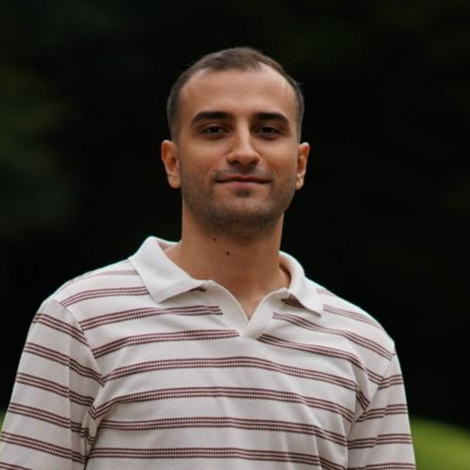

Yeni işlere müsait · İzmir
Merhaba, ben Korhan Ergün TUNÇELLİ, bilgisayar mühendisi
C#, ASP.NET MVC ve React ile web uygulamaları geliştiriyorum. Tekirdağ Namık Kemal Üniversitesi'nden 3.31 ortalamayla mezun oldum.

- Ortalama
- 3.31
- Staj
- 3 şirket
- Teknoloji
- 15
- Proje
- 4
Hakkımda
Tekirdağ Namık Kemal Üniversitesi'nden 3.31 ortalamayla mezun oldum. Bugün web ve backend yazılım geliştirme ile veritabanı alanlarında çalışıyor, takım içinde problem çözmeyi seviyorum.
- Ad
- Korhan Ergün TUNÇELLİ
- Konum
- İzmir, Türkiye
- Diller
- İngilizce B2, Almanca A1
- Durum
- Müsait
Agile · Takım çalışması · Liderlik · Teknik dokümantasyon · Problem çözme
Staj deneyimim. Sağlık, telekom ve otomotiv şirketlerinde üç staj.
-
TEMMUZ – AĞUSTOS 20244 sayfa hazır
 Doktor notlarıReact
Doktor notlarıReact- Hemşire notlarıReact
- Hasta verileriReact
- Veri tablolarıJavaScript
CEIBA Tele ICU
Yazılım geliştirme stajı
React.js ile doktor notları, hemşire notları ve hasta verileri sayfalarındaki tabloları ve not bölümlerini geliştirdim.
-
ŞUBAT – HAZİRAN 2024
Turkcell Global Bilgi
Uzun dönem staj
Fatura süreçleri ve ilgili şikayetler için Python ve SQL çözümleri kurdum; makine öğrenmesiyle veri analizi yaptım.
-
AĞUSTOS – EKİM 2022
BorgWarner
IT yaz stajı
Ağ protokolleri, sistem kurulumları ve Raspberry Pi uygulamalarıyla donanım ve yazılımı birlikte çalıştırdım.